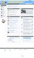

Vous avez besoin de réaliser des miniatures de sites web, par exemple pour agrémenter un annuaire ? Vous avez besoin d'en générer plusieurs centaines par jour en exploitant, par exemple, un VPS ou un serveur dédié sans avoir à payer ni dépendre d'un service externe ? Ce tutoriel est fait pour vous. Nous allons voir ici comment installer un serveur X simplement ainsi que générer des miniatures avec IceWeasel (la version "libre" de Firefox sous Debian) ou Opera. Toute la configuration se fera, bien sûr, en console.
Dans ce tutoriel nous utiliserons une machine sous Debian Lenny. La chaine [URL] sera à remplacer par une URL quelconque, sans rajouter de guillemets particuliers.
Nous aurons besoin ici des packages xvfb xfonts-base x-window-system-core scrot, qui correspondent respectivement au serveur X (X Window System), des polices de base qui seront utilisées par notre navigateur et du programme permettant de faire les captures de notre écran.
Une fois le serveur X installé, nous définissons la variable d'environnement "DISPLAY" ayant comme valeur ":1" (export DISPLAY=":1"), celle-ci sera utilisée par scrot et, si vous l'utilisez, Opera, puisque ces deux commandes ne comportent pas de paramètre nous permettant de préciser le numéro de serveur X11 et utilisent donc cette variable d'environnement.
Pour lancer le serveur X, nous utiliserons la commande Xvfb :1 -screen 0 1280x1024x24 &. ":1", ou "$DISPLAY", correspond au numéro du serveur X, comme expliqué précédemment, puis la résolution est sous la forme WxHxD (Width / Height / Depth). Pour plus d'informations, je vous conseille d'aller lire le man de Xvfb.
Nous allons voir dans cette partie les détails techniques pour la génération de nos miniatures avec IceWeasel (Firefox).
Une fois ce package installé, lancez le navigateur dans notre serveur X11 grâce à la commande iceweasel --display=:1 [URL] &, dans laquelle nous précisons le serveur X11 (display) ainsi que l'url à charger. Nous le lançons ici uniquement afin de générer le profil utilisateur (disponible dans ~/.mozilla/firefox/[Nom du profil]). Killez ensuite ce processus (évidemment nous n'avons pas de périphérique permettant de contrôler notre serveur graphique, nous sommes donc dans l'obligation de fermer IceWeasel "à l'arrache". Pour éviter d'avoir une demande de restauration de session, avant de relancer le navigateur, nous supprimerons le fichier ~/.mozilla/firefox/[Nom du profil]/sessionstore.js).
Nous allons ensuite cacher les barres d'outils ainsi que la barre d'état du navigateur. Pour cela, éditez le fichier ~/.mozilla/firefox/[Nom du profil]/localstore.rdf avec le contenu suivant :
Pour ne pas rentrer dans les détails de la configuration, on peut dire rapidement que #main-window correspond à la fenêtre du navigateur et qu'on définit ici la largeur ainsi que la hauteur de celle-ci (les paramètres width et height ne fonctionnent pas à cause d'un bug non résolu). Quand aux autres paramètres, ils permettent de masquer les différentes barres du navigateur.
Il le nous reste plus qu'à relancer le navigateur avec la commande indiquée ci-dessous. Pour réaliser la capture d'écran et l'enregistrer par exemple dans ~/screen.png, il suffit d'exécuter la commande suivante : scrot ~/screen.png.
Téléchargez le package d'Opera sur le site officiel et installez-le (attention cependant aux dépendances d'Opera qui nécessite la présence des packages suivants : libaudio2 libmng1 libqt3-mt, disponibles sur les dépots officiels de Debian).
Lors du premier lancement, Opera nous demande l'accepter la licence du logiciel. Killez le serveur X (et non pas le processus opera, celui-ci, apparemment ne répondant pas à un SIGTERM et un SIGKILL, pour celui-ci, générant une très jolie fenêtre de restauration de session que je n'ai pas réussi à enlever). On supposera ici que vous l'acceptez. Éditez donc le ~/.opera/operaprefs.ini et modifier la section [State] de la manière suivante :
[State]
Accept License=1
Reading Plugins=0
Run=0
Il ne vous reste plus qu'à relancer le serveur X et opera de la manière suivante : opera -fullscreen [URL] &, qui comporte, à la différence de Firefox, le paramètre pour la mise en plein écran du navigateur lors de son lancement.
Pour l'utilisation de scrot, c'est expliqué dans la partie précédente, si vous l'avez lue et nous obtenons, par exemple, cette capture d'écran.
Nous avons vu précédemment deux solutions assez lourdes, notamment à cause de l'interface utilisateur qui nous est totalement inutile ici. Nous allons ici utiliser CutyCapt, un script libre en C++ utilisant la lib webkit de Qt4. Il est sans préciser que la compilation se fait sur une machine de développement.
Pour compiler CutyCapt installez les packages subversion libqt4-webkit libqt4-dev g++ make, puis récupérer les sources grâce à la commande :
svn co https://cutycapt.svn.sourceforge.net/svnroot/cutycapt
Puis, dans le dossier précédemment téléchargé, procéder à la compilation : qmake && make.
Il ne vous reste plus qu'à déplacer la binaire dans le dossier /usr/sbin de votre serveur de production (nécessite tout de même les packages Qt4 précisés ci-dessus), et de l'utiliser de la manière suivante : CutyCapt --url=[URL] --out=screen.png &. Pour plus d'informations sur les options disponibles, je vous conseille d'aller sur la page de présentation du script en question.
Pour terminer, nous allons parler des performances. Il est clair que relancer Firefox pour chaque miniature et relancer le serveur X pour Opera peut être lourd et long. Heureusement, chacun de ses deux programmes comporte les éléments nécessaires afin de pouvoir changer de page web, sans avoir à redémarrer le navigateur.
Pour Opera, il vous suffit d'utiliser la commande opera -remote "openURL([URL])" ;
Pour Firefox, c'est la même commande (iceweasel -remote "openurl([URL])"), excepté qu'il faut rajouter un paramètre de configuration sinon la page s'ouvre dans un nouvel onglet. Pour cela, éditez le fichier ~/.mozilla/firefox/[Nom du profil]/prefs.js et rajoutez (ou modifiez) le paramètre suivant :
user_pref("browser.link.open_external", 0);
Et enfin, pour redimensionner la capture d'écran, vous pouvez par exemple utiliser la commande convert, contenue dans le paquet imagemagick, de la manière suivante :
Et si vous souhaitez la rogner, par exemple dans le cas de CutyCapt, vous pouvez utiliser le paramètre crop de cette même commande.
Si vous souhaitez utiliser ces différents points techniques en production, il ne vous reste plus qu'à réaliser le script bash correspondant ou un script dans langage de développement que vous utilisez. Le but de ce tutoriel a été d'aborder certains points techniques, après il ne reste plus qu'à décider, notamment comment et quand vous allez lancer le serveur graphique pour générer vos miniatures, par exemple la nuit où la charge des machines est moins élevée. Il est conseillé par ailleurs si vous en avez beaucoup à générer, d'utiliser une autre machine afin de ne pas perturber les services habituels.
Pour plus d'informations, je vous conseille d'aller lire (liste non exhaustive) :
{kind=link}
{kind=link}
{kind=link}
{kind=link}
{kind=link}